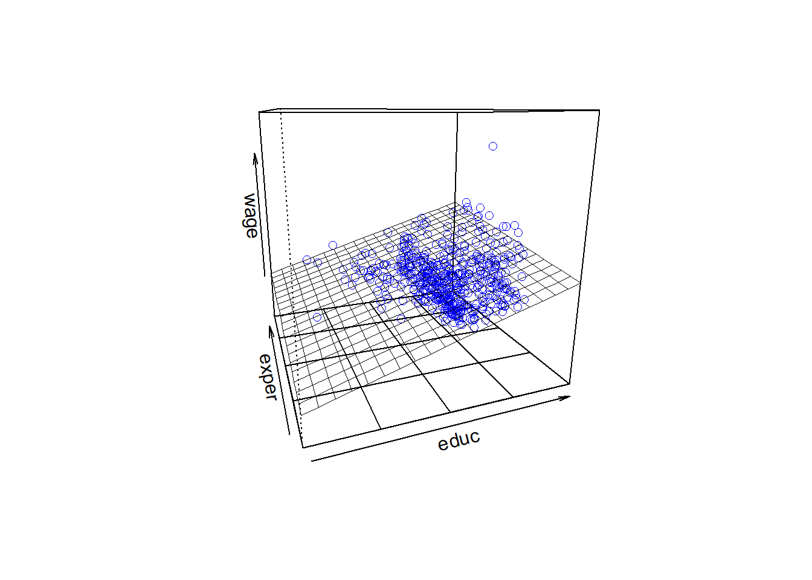
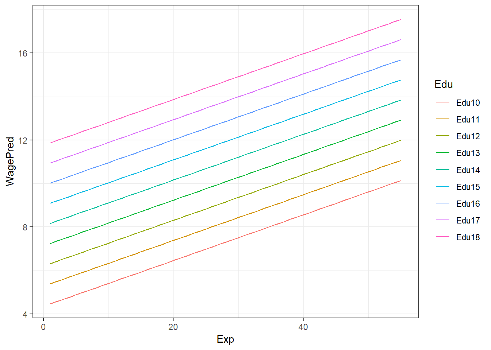

Multiple Regression
Man könnte nun die bereits erwähnte Variable Erfahrung (exper) ins Modell aufnehmen. Der bereits aus der Korrelation ersichtliche (negative) Zusammenhang mit der Ausbildung educ lässt den Schluss auf eine Kovariabilität der beiden Variablen zu. Man nennt derartige Variablen auch Kovariate. Im linearen Modell wird diese jedoch wie eine weitere Variable (ein weiterer Prädiktor) zur Vorhersage des Kriteriums verwendet.
Definition
Die formale Definition eines multiplen linearen Modells ist:
\[\begin{equation} y_i = b_0 + b_1 \cdot x_{1i} + \cdots + b_k \cdot x_{ki} + \varepsilon_i \tag{12} \end{equation}\]Die wesentlichen Parameter dieses Modells sind:
- Intercept \(b_0\): jener Wert den \(y_i\) einnimmt, wenn \(x_{ji} = 0\) ist (mit \(j \epsilon [1,k]\)).
- Steigung \(b_i\): die Zunahme von \(y_i\), wenn \(x_{ji}\) sich um eine Einheit erhöht, bei gleichzeitigem Konstanthalten der restlichen Prädiktorwerte \(x_{mi}\) (mit \(m [1,k]\) und \(m \ne j\))!
Des Weiteren berücksichtigt auch dieses Modell wieder einen Fehler (\(\varepsilon_i\)). Betrachtet man das multiple Modell isoliert (also ohne Fehlerterm), ist folgende Schreibweise üblich:
\[\begin{equation} \hat{y}_i = b_0 + b_1 \cdot x_{1i} + \cdots + b_k \cdot x_{ki} \tag{13} \end{equation}\]Betrachten wir an unseren Beispieldaten folgendes Modell mit zwei Prädiktoren:
\[\begin{eqnarray*} \hat{wage}_i = b_0 + b_1 \cdot educ_{i} + b_2 \cdot exper_{i} \tag{14} \end{eqnarray*}\] model_2 <- lm(wage ~ educ + exper, data = CPS85)
Det_model_2 <- pander(summary(model_2))
plotPlane(model = model_2, plotx1 = "educ", plotx2 = "exper")
Dabei entspricht der Koeffizient \(b_2\) der Zunahme des Gehaltes \(\hat{y}_i\) wenn sich die Erfahrung \(x_{2i}\) um eine Einheit erhöht und die Ausbildung \(x_{1i}\) konstant gehalten wird. In nachfolgernder Tabelle sind die Werte der Vorhersagen des Modells für den vorliegenden Datensatz auszugsweise dargestellt:
MinExp <- min(CPS85$exper)
MaxExp <- max(CPS85$exper)
RowSeq <- seq(from = 1, to = MaxExp, by = 1)
educVon <- 10
educBis <- 18
AnzCols <- educBis - educVon + 1
Predicted <- matrix(NA, nrow = MaxExp, ncol = AnzCols)
for (i in seq(from = 1, to = MaxExp, by = 1)) {
new_input <- data.frame(educ = educVon:educBis, exper = i)
Predicted[i,] <- predict(model_2, newdata = new_input)
}
Predicted <- data.frame(seq(from = 1, to = MaxExp, by = 1), Predicted)
colnames(Predicted) <- c("Exp", "Edu10", "Edu11","Edu12", "Edu13",
"Edu14","Edu15", "Edu16","Edu17", "Edu18")
TabRows2Disp <- c(1:3, 53:55)
Predicted2Disp <- Predicted[TabRows2Disp,]
row.names(Predicted2Disp) <- NULL
pander(Predicted2Disp, style = "rmarkdown")| Exp | Edu10 | Edu11 | Edu12 | Edu13 | Edu14 | Edu15 | Edu16 | Edu17 | Edu18 |
|---|---|---|---|---|---|---|---|---|---|
| 1 | 4.46 | 5.386 | 6.312 | 7.238 | 8.164 | 9.09 | 10.02 | 10.94 | 11.87 |
| 2 | 4.565 | 5.491 | 6.417 | 7.343 | 8.269 | 9.195 | 10.12 | 11.05 | 11.97 |
| 3 | 4.671 | 5.597 | 6.522 | 7.448 | 8.374 | 9.3 | 10.23 | 11.15 | 12.08 |
| 53 | 9.927 | 10.85 | 11.78 | 12.71 | 13.63 | 14.56 | 15.48 | 16.41 | 17.33 |
| 54 | 10.03 | 10.96 | 11.88 | 12.81 | 13.74 | 14.66 | 15.59 | 16.51 | 17.44 |
| 55 | 10.14 | 11.06 | 11.99 | 12.92 | 13.84 | 14.77 | 15.69 | 16.62 | 17.55 |
CPS852Disp <- melt(Predicted,
id.vars = "Exp",
measure.vars = c("Edu10", "Edu11", "Edu12",
"Edu13", "Edu14","Edu15",
"Edu16", "Edu17", "Edu18"))
CPS852Disp$Exp <- rep(1:55, 9)
colnames(CPS852Disp) <- c("Exp", "Edu", "WagePred")
p <- ggplot(CPS852Disp, aes(x = Exp, y = WagePred, color = Edu)) +
geom_line() +
theme_bw()
print(p, comment = FALSE)
Modellvergleich
Ein Modell sollte die Wirklichkeit mit möglichst großer Genauigkeit abbilden. Bei der Erstellung des Modells wurden aufgrund einer Stichprobe aus der Grundgesamtheit die Modellparameter (z.B. die \(b\)’s) bestimmt. Um nun festzustellen, inwieweit das Modell brauchbare Vorhersagen liefert, sollte man das Modell evaluieren. In den vorangegangen Beispielen wurden zwei Modelle (model_1 und model_2) erstellt.
Der Vergleich der Modelle ist über den Fehler des jeweiligen Modells möglich. Je kleiner der Fehler, desto besser bildet das Modell die beobachteten Werte ab. Im Idealfall (Fehler = 0), würden alle beobachteten Werte gleich den vorhergesagten Werten sein und damit auf der Linie liegen.
M <- data.frame(wage = CPS85$wage, educ = CPS85$educ, exper = CPS85$exper)
MV_Data <- data.frame(educ = M$educ, exper = M$exper)
MSE_Model1 <- round(mean(resid(model_1)^2),2)
#MSE_Model1 <- mean((M$wage - predict(model_1, newdata = MV_Data))^2)
StdResid <- rstandard(model_1)
#StdResid <- (resid(model_1)-mean(resid(model_1)))/sd(resid(model_1))
MSE_Model2 <- round(mean((M$wage - predict(model_2, newdata = MV_Data))^2),2)Der Modellvergleich der obigen Beispiele ergibt für das Modell 1 einen \(MSE_1 =\) 22.52 und für Modell 2 einen \(MSE_2 =\) 21.04.
Bei diesen Ergebnis lässt sich zunächst nur feststellen, dass der \(MSE_2\) kleiner als der \(MSE_1\) ist. Ob diese Verringerung des \(MSE\) von statistischer und/oder praktischer Signifikanz ist, wird im folgenden noch genauer betrachtet.
Mit einer einfachen ANOVA lässt sich nun auch die statistische Signifikanz der Änderungen im Fehler bei den verwendeten Modellen berechnen. Betrachten wir zunächst die statistische Änderung die Modell 1 im Vergleich zum Mittelwertsmodell erzielt:
# ANOVA Tests auf signifikante Änderungen model_1 vs Mittelwertsmodell
# Berechnung der Quadratsummen für die Regression (educ)
preds_1 <- predict(model_1, newdata = CPS85)
AnzPred <- 2 # b_0 und b_1
SS_Regression_1 <- sum((preds_1 - mean(preds_1))^2)
Zdf_Regression_1 <- AnzPred - 1
MSS_Regression_1 <- round(SS_Regression_1 / Zdf_Regression_1, 2)
# Berechnung der Quadratsummen des Fehlers (Residuals)
Residuals_1 <- CPS85$wage - preds_1
SS_Residuals_1 <- sum(Residuals_1^2)
Ndf_Residuals_1 <- nrow(CPS85) - AnzPred
MSS_Residuals_1 <- round(SS_Residuals_1 / Ndf_Residuals_1, 2)
# Berechnung der Teststatistik
F_Wert <- round(MSS_Regression_1 / MSS_Residuals_1, 2)
# Berechnung der totalen Quadratsumme
SS_Total_1 <- sum((CPS85$wage - mean(CPS85$wage))^2)
CPS85_Total <- nrow(CPS85) - 1
# Vergleich mit den Ergebnissen der ANOVA
pander(anova(model_1))| Df | Sum Sq | Mean Sq | F value | Pr(>F) | |
|---|---|---|---|---|---|
| educ | 1 | 2053 | 2053 | 90.85 | 5.474e-20 |
| Residuals | 532 | 12023 | 22.6 | NA | NA |
Das Ergebnis zeigt uns, dass Modell 1 im Vergleich zum Mittelwertsmodell zu einer statistisch signifikanten Fehlerreduktion führt. Bei der händischen Berechnung der Prüfgrößen erhalten wir für die mittlere Quadratsumme der Regression (also der Varianz der Werte die durch das Modell vorhergesagt werden) einen Wert von $MSS_{Regression} = $ 2053.29, welcher ident mit dem Wert der ANOVA-Tabelle ist.
Die restlichen Kennwerte stimmen auch mit dem Ergebnis der ANOVA überein (\(MSS_{Residual}\) = 22.6, F(1,532) = 90.85).
Wird das Modell 1 erweitert (auf Modell 2), stellt sich die Frage, ob diese Erweiterung im statistischen Sinn zu einer signifikanten Verbesserung führt. Bei diesem Vergleich wird nun die Änderung (Change Statistic) zwischen Modell 1 und Modell 2 auf Signifikanz geprüft.
# ANOVA Tests auf signifikante Änderungen model_1 vs model_2 (Änderung signifikant?)
pander(anova(model_1, model_2))| Res.Df | RSS | Df | Sum of Sq | F | Pr(>F) |
|---|---|---|---|---|---|
| 532 | 12023 | NA | NA | NA | NA |
| 531 | 11233 | 1 | 790.6 | 37.37 | 1.893e-09 |
Zum Verständnis dieser Statistik greifen wir kurz zurück auf die verschiedenen Möglichkeiten der Berechnung von Korrelationskoeffizienten zurück. Diese sind:
- Pearson Korrelationskoeffizient (\(r_{xy}\)): entspricht der Kovarianz der \(z\)-transformierten Variablen.
- Partielle Korrealtionskoeffizient (\(r_{xy \cdot z}\)): ist die bivariate Korrelation zweier Variablen, welche mittels linearer Regression vom Einfluss einer Drittvariablen bereinigt wurden. 3.Semipartialkorrelation (\(sr_{k \cdot x_j}\)): zwischen Kriterium und dem \(j\)-ten Prädiktor ergibt sich als Korrelation von \(y\) mit dem Residuum \(x_j^*\) der linearen Regression des \(j\)-ten Prädiktors auf den anderen Prädiktor. Mit anderen Worten, die Semipartialkorrelation gibt den alleinigen Beitrag eines Prädiktors \(x_j\) (bereinigt um die gemeinsamen Anteile mit den restlichen Prädiktoren) am Kriterium an. Das Quadrat dieses Koeffizienten wird unter anderm auch als Nützlichkeit des Prädiktors \(U_k\) bezeichnet und findet sich z.B. in SPSS als \(R^2_{change}\) wieder. Formal: \(sr_{k \cdot 12 \cdots (k-1)}^2 = R_{y, 12 \cdots k}^2 - R_{y, 12 \cdots k-1}^2\)
# Korrelationen, Paritial- und Semipartialkorrelationen
Korr_Data <- data.frame(wage = M$wage, educ = M$educ, exper = M$exper)
PearsonKorr <- cor(Korr_Data)
ModVgl_Korr <- pander(PearsonKorr)
R2Change_mod_1 <- PearsonKorr[2]^2
# Partial Korrelation zwischen "wage" und "educ" gegeben "exper"
PartKorr_1 <- pcor.test(Korr_Data$wage, Korr_Data$educ, Korr_Data$exper)
ModVgl_ParKorr_1 <- pander(PartKorr_1)
# Partial Korrelation zwischen "wage" und "exper" gegeben "educ"
PartKorr_2 <- pcor.test(Korr_Data$wage, Korr_Data$exper, Korr_Data$educ)
ModVgl_ParKorr_2 <- pander(PartKorr_2)
# Semi-Partial (part) Korrelation zwischen "wage" und "educ" gegeben "exper"
SemiPartKorr_1 <- spcor.test(Korr_Data$wage, Korr_Data$educ, Korr_Data$exper)
ModVgl_SemParKorr_1 <- pander(SemiPartKorr_1)
# Semi-Partial (part) Korrelation zwischen "wage" und "exper" gegeben "edu"
SemiPartKorr_2 <- spcor.test(Korr_Data$wage, Korr_Data$exper, Korr_Data$educ)
ModVgl_SemParKorr_1 <- pander(SemiPartKorr_2)
R2Change_mod_2 <- round(SemiPartKorr_2$estimate^2,3)
pander(summary(model_2))| Estimate | Std. Error | t value | Pr(>|t|) | |
|---|---|---|---|---|
| (Intercept) | -4.904 | 1.219 | -4.024 | 6.564e-05 |
| educ | 0.926 | 0.0814 | 11.37 | 5.563e-27 |
| exper | 0.1051 | 0.0172 | 6.113 | 1.893e-09 |
| Observations | Residual Std. Error | \(R^2\) | Adjusted \(R^2\) |
|---|---|---|---|
| 534 | 4.599 | 0.202 | 0.199 |
Im vorliegenden Beispiel sind daher die beiden Nützlichkeitsmaße \(U_{educ}\) = 0.146 und \(U_{exper}\) = 0.056 von Interesse. Ersteres bedeutet, dass die Varianzaufklärung aufgrund der Verwendung der Variablen educ 14.6% ist. Wird im Modell dann noch der Prädiktor exper aufgenommen, werden zusätzliche 5.6% an Varianz des Kriteriums wage erklärt. Insgesamt werden somit \(R^2 = 0.202\) oder 20.2% der Varianz des Kriteriums erklärt. Der Test (\(t(531) = 11.37, p< .001\)) bestätigt für den Prädiktor educ, sowie (\(t(531) = 6.11, p<.001\)) für den Prädiktor exper die statistische Signifikanz.
Aufgabe MLR 1
Öffne ein neues R-Script und kopiere die bereits bekannte Kopfzeile in diese Datei. Speichere anschließend das Skript unter dem Namen SLR_Aufgabe2.R. Bearbeite nun folgende Aufgabenstellungen:
- Lade die Datei “Album Sales 2.dat”
- erstelle ein lineares Modell zur Vorhersage der Verkaufszahlen (sales) durch die Variable adverts.
- erstelle ein weiteres lineares Modell zur Vorhersage der Verkaufszahlen (sales) durch die Variable adverts, airplay und attract.
- Zeige die Ergebnisse des ersten Modells an.
- Zeige die Ergebnisse des zweiten Modells an.
- Vergleiche die beiden Modelle mit einer ANOVA und interpretiere die Ergebnisse.
- Berechne zur Überprüfung der Multikolinearität den Kennwert Tol und VIF (verwende die Funktion vif(). Hinweis: die Toleranz ist der Kehrwert von VIF)
Wahl relevanter Prädiktoren
Eine wichtige Frage bei der Modellerstellung betrifft die Wahl der besten Prädiktoren. Prinzipiell muss bereits im Vorfeld der statistischen Analyse bestimmt werden, welche Merkmale für die Modellierung der abhängigen Variablen am geeignetsten sind. Ausreichende theoretische und praktischen Kenntnisse sind daher unbedingt erforderlich. Die Erfassung von potentiellen Prädiktoren ist stets mit zeitlichen und/oder finanziellen Aufwand verbunden. Prädiktoren sind dann gut geeignet, wenn Sie folgende Eigenschaften erfüllen:
- jeder Prädiktor erklärt möglichst viel der Variabilität des Kriteriums.
- die Prädiktoren (z.B. \(x_1\) und \(x_2\)) sind im günstigsten Fall voneinander unabhängig (\(r(x_1,x_2) \approx 0\))
Diese Eigenschaft kann man durch eine einfache paarweise Korrelation prüfen. Vor allem wenn die zweite Eigenschaft nicht gegeben ist, also wenn einen hohe Korrelationen zwischen zwei Prädiktoren vorliegt, wird es bei der Modellierung zu maßgeblichen Problemen (Multikollinearität) kommen (siehe: Voraussetzungen der multiplen Regression.
Neben der Frage nach der Güte einzelner Prädiktoren ist es auch wichtig sich Gedanken über die Anzahl der zu verwendenden Prädiktoren zu machen. Einerseits führt trivialerweise eine höhere Anzahl von Prädiktoren auch zu einer besseren Aufklärung der Varianz im Kriterium. Ausgenommen von Prädiktoren die in keiner Beziehung zum Kriterium stehen, wird jeder zusätzliche Prädiktor mehr oder weniger der verbleibenden Varianz erklären. In den meisten Fällen ist es aber aus zeitlichen/finanziellen oder sonstigen Gründen nicht sinnvoll, eine möglichst große Menge an Prädiktorvariablen zu erheben.
Werden zu viele erklärende Variablen zur Spezifizierung eines Modells verwendet, wird die tatsächliche (geringere) Anpassungsgüte verschleiert. Das Modell wird zwar besser auf die Daten der Stichprobe angepasst, allerdings besteht aufgrund fehlender Generalität keine Übertragbarkeit auf die Grundgesamtheit. Grundsätzlich sollte wie bereits erwähnt die Wahl der Prädiktoren auf theoretisch und praktisch fundierten Grundlagen erfolgen. Welche der zur Verfügung stehenden Prädiktoren im Endeffekt für das Modell verwendet werden, kann anhand der Modellvergleiche auch im statistischen Sinn evaluiert werden.
Bei der bisher besprochenen Vorgehensweise der Modellerstellung obliegt es dem Analysten, die zu verwendenden Prädiktoren zu bestimmen. Eine weitere Möglichkeit bietet die sogenannte sequentielle Vorgehensweise, bei der die Ein- und Ausschlusskriterien für Prädiktoren durch statistische Kriterien getroffen werden.
Sequentielle Modellbildung
In manchen Fällen sind nicht ausreichende theoretische Grundlagen und Erfahrungswerte bezüglich der Wirksamkeit und Wichtigkeit von Prädiktoren vorhanden. In solchen Fällen kann ein exploratives Vorgehen bei der Modellerstellung sehr hilfreich sein. Die nachfolgend beschriebene sequentielle Modellierung entspricht einem solchen Ansatz.
Bei der sequentiellen Modellbildung wird ein Modell schrittweise mit unabhängigen Variablen erweitert. In der Regel wird jene Variable, die das \(R^2\) am meisten vergrößert und damit die Vorhersage am meisten verbessert hinzugefügt.
Abhängig von der Anzahl der verfügbaren Prädiktoren wird die Bildung neuer Modelle entweder abgebrochen, wenn weitere Variablen keinen weiteren statistischen signifikanten Beitrag zur Varianzaufklärung mehr leisten, oder wenn keine weiteren Variablen zur Verfügung stehen.
Aufgrund der statistischen (maschinellen) Entscheidung über die Verwendung von Prädiktoren, wird diese Vorgehensweise vielfach kritisiert. Nehmen wir in einem sehr einfachen Beispiel einmal an, es stehen 2 Prädiktoren (\(x_1, x_2\)) zur Vorhersage der abhängigen Variablen zur Verfügung. Der Prädiktor \(x_1\) klärt geringfügig weniger Varianz des Kriteriums auf als Prädiktor \(x_2\), ersterer ist aber inhaltlich sinnvoller, leichter zu interpretiern und vor allem weit kostengünstiger zu erfassen. Bei der sequentiellen Methode könnte aber aufgrund des Abbruchkriteriums (Signifikanz des Beitrags) genau dieser Prädiktor vom Modell ausgeschlossen werden.
Bei der sequentiellen Methode unterscheidet man noch unterschiedliche Vorgehensweisen hinsichtlich des Hinzufügens/Entfernens von Variablen:
- Schrittweise (STEPWISE): Diese Methode ist ähnlich wie “Vorwärts”-Selektion, es wird aber zusätzlich bei jedem Schritt getestet, ob die am wenigsten “nützliche” Variable entfernt werden soll.
- Vorwärts-Selektion (FORWARD): Die Variablen werden sequenziell in das Modell aufgenommen. Diejenige unabhängige Variable, welche am stärksten mit der abhängigen Variable korreliert wird zuerst zum Modell hinzugefügt. Dann wird jene der verbleibenden Variablen hinzugefügt, die die höchste partielle Korrelation mit der abhängigen Variablen aufweist. Dieser Schritt wird wiederholt, bis sich die Modellgüte (R-Quadrat) nicht weiter signifikant erhöht oder alle Variablen ins Modellaufgenommen worden sind.
- Rückwärts-Elimination (BACKWARD): Zunächst sind alle Variablen im Regressionsmodell enthalten und werden anschließend sequenziell entfernt. Schrittweise wird immer diejenige unabhängige Variable entfernt, welche die kleinste partielle Korrelation mit der abhängigen Variable aufweist, bis entweder keine Variablen mehr im Modell sind oder keine die verwendeten Ausschlusskriterien erfüllen.
Diese Methoden unterscheiden sich von der sogenannten Einschlussmethode (ENTER), bei der alle Variablen gleichzeitig in das Modell eingefügt werden. Diese Methode wird angewendet, wenn das Modell auf theoretischen Überlegungen basiert. Das heißt, sie eignet sich um Theorien zu testen, während die übrigen Methoden eher im Rahmen explorativer Studien eingesetzt werden.
Modellvergleich durch AIC
Nach einer (explorativen) Analyse der Daten und der Wahl einer passenden Modellklasse, geht es darum das bestmögliche Modell zu den vorliegenden Daten zu finden (siehe FUB). Daher stellt sich die Frage, was “bestmögliches” Modell bedeutet und wie ein solches bestimmt werden kann. In diesem Zusammenhang wird der Gedanke aufgegriffen, dass mit keinem Regressionsmodell die Realität eins zu eins abgebildet werden kann. Nimmt man zu viele erklärende Variablen auf, läuft man in Gefahr das Modell zu “overfitten” (überanpassen). Ein überangepasstes Modell erklärt die zum Schätzen verwendete abhängige Variable meist sehr gut, schneidet jedoch in der Vorhersage von Daten außerhalb der verwendeten Stichprobe häufig schlecht ab. Auf der anderen Seite kann ein Modell auch “underfitted” sein, d.h. die aufgenommenen unabhängigen Variablen können die abhängige Variable nur sehr unzureichend erklären.
Das Thema der Modellselektion ist ein allgegenwärtiges in der Statistik/ Regressionsanalyse. Dennoch gibt es keine absoluten, objektiven Kriterien anhand derer entschieden werden kann, ob das eine oder das andere Modell gewählt werden sollte. Vielmehr existieren viele verschiedene Verfahren, die versuchen zwischen möglichst viel Erklärungsgehalt des Modells und möglichst wenig Komplexität (siehe dazu Ockhams Rasiermesser) abzuwägen.
In einem Artikel von (Yamashita 2007) wurden folgende Methoden:
- Partial F
- Partial Correlation
- Semi-Partial Correlation
- Akaike Information Criteria (AIC)
für den Vergleich von Regressionsmodellen untersucht. Die Autoren schließen aus den Ergebnissen ihrer Untersuchung, dass alle Methoden zu den gleichen Ergebnissen, d.h. zur gleichen Modellentscheidung gelangen. Da aber der AIC einerseits leicht zu interpretieren und andererseits auch auf nichtlineare Modelle und Modelle die auf nicht normalverteilten Daten beruhen zu erweitern ist, wird die Anwendung dieses Kriteriums empfohlen.
Das AIC dient also dazu, verschiedene Modellkandidaten zu vergleichen. Dies geschieht anhand des Wertes der log-Likelihood, der umso größer ist, je besser das Modell die abhängige Variable erklärt. Um nicht komplexere Modelle als durchweg besser einzustufen wird neben der log-Likelihood noch die Anzahl der geschätzten Parameter als Strafterm mitaufgenommen.
\[\begin{equation} AIC_k = 2 \cdot |k| - 2\cdot \hat{L}_k \tag{15} \end{equation}\]In der Formel steht \(k\) für die Anzahl der im Modell enthaltenen Parameter und \(\hat{L}_k\) für den Wert der log-Likelihoodfunktion.
Das Modell mit dem kleinsten AIC wird bevorzugt.
Das AIC darf nicht als absolutes Gütemaß verstanden werden. Auch das Modell, welches vom Akaike Kriterium als bestes ausgewiesen wird, kann eine sehr schlechte Anpassung an die Daten aufweisen. Die Anpassung ist lediglich besser als in den Alternativmodellen.
Die praktische Bedeutung soll anhand eines einfachen Beispiels und der Verwendung des Kriteriums bei unseren Beispieldaten erläutert werden.
Nehmen wir an, dass drei Modellvergleiche (mod_1,mod_2,mod_3) folgende AIC-Werte ergeben haben:
\(AIC_1 = 100, AIC_2 = 102, AIC_3 = 110\). Berechnet man \(e^{(AIC_{min} - AIC_i)/2}\), kann das Ergebnis folgendermaßen interpretiert werden:
- Beim mod_2 ist es um das \(e^{(100-102)/2} = 0.368\)-fache wahrscheinlicher den Informationsverlust zu verringern als bei Modell 1 (mod_1).
- Beim mod_3 ist es um das \(e^{(100-110)/2} = 0.007\)-fache wahrscheinlicher den Informationsverlust zu verringern als bei Modell 1 (mod_1).
Bei diesem Beispiel würde man also mod_3 für weitere Betrachtungen ausschließen. Nachdem aber die Modelle mod_1 und mod_2 sehr nahe beisammen liegen, ist es mit den vorliegenden Daten nicht möglich, eine klare Entscheidung für eines der beiden Modelle zu treffen.
Man könnte durchaus noch zusätzliche Daten erheben um dadurch eventuell eine klarere Trennung der beiden Modelle (mod_1, mod_2) zu erkennen. Ist das nicht möglich, könnte man beide Modelle mit der relativen likelihood gewichten und auf eine statistische Signifikanz testen, oder davon ausgehen, dass mit den vorliegenden Daten eine Modellwahl eben nicht eindeutig zu treffen ist.
Modellvergleich durch Kreuzvalidierung
Betrachten wir im Folgenden ein Modell (mod_1) mit den Prädiktoren sector (Berufsgruppe), exper (Erfahrung), sowie das um den Prädiktor age (Alter) erweiterte Model (mod_2).
Die Vorhergehensweise bei der Kreuzvalidierung ist relativ simpel:
- Erstelle ein/mehrere Modell(e) und berechne die jeweiligen Modellparameter \(b_i^j\) (mit \(j = j\)-tes Modell und \(i = i\)’ter Parameter) mit einer Teilmenge der zur Verfügung stehenden Daten (z.B. Training_Data \(\subset\) DF).
- Verwende die restlichen Daten um mit den entsprechenden Modellen Vorhersagen zu berechnen.
- Berechne die Differenz der beobachteten Daten und der vorhergesagten Daten. Diese Differenz entspricht dem Fehler des Modells (\(\rightarrow \epsilon_i\)).
- Berechne den mittleren quadratischen Fehler der Differenzen.
Voraussetzungen bei linearer Modellierung
Folgende Voraussetzungen müssen/sollten bei der linearen Modellierung mit mehreren Prädiktoren erfüllt sein, damit die Ergebnisse auch sinnvoll interpretiert werden können.:
- Lineare Beziehung zwischen den Variablen.
- Keine Multikollinearität.
- Keine Ausreißer.
- Unabhängigkeit der Residuen (keine Autokorrelation).
- Varianzgleichheit der Residuen (Homoskädasdizität).
- Normalverteilung der Residuen.
Eine Verletzung einer/mehrerer dieser Voraussetzungen führt meistens dazu, dass die Genauigkeit der Vorhersage gemindert wird. Relativ einfach zu prüfen sind die ersten drei Voraussetzungen (graphisch, Kennwerte wie Korrelation, etc.). Bei der Überprüfung der restlichen Voraussetzung muss man i.A. auf entsprechende statische Verfahren zurückgreifen, die hier aber nicht näher besprochen werden. Einen Überblick über die Möglichkeiten zur Überprüfung der Voraussetzungen finden Sie z.B. unter (UZH 2018), oder MR2 - (Hemmerich 2018).
References
Yamashita, T. 2007. “A Stepwise Aic Method for Variable Selection in Linear Regression.” Communications in Statistics Theory and Methods, No. 36:13:2395–2403. doi:https://doi.org/10.1080/03610920701215639.
UZH. 2018. “Multiple Regressionsanalyse.” https://www.methodenberatung.uzh.ch/de/datenanalyse_spss/zusammenhaenge/mreg.html.
Hemmerich, W.A. 2018. “StatistikGuru Multiple Lineare Regression in Spss, Version 1.96.” https://statistikguru.de/spss/multiple-lineare-regression/einleitung-2.html.